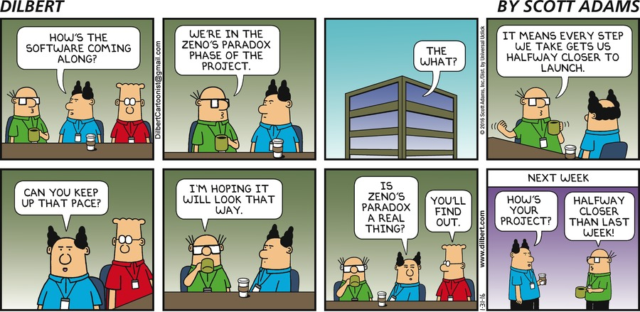

Interested in Org but not enough to monitor the mailing list? In this blog I digest developments, and each month regurgitate what I consider the highlights, along with anything else Org-related I consider nifty.
Posts are published in .html, .org, .org.html, .txt, and .pdf forms — because why not 😛
November 2026 2026-11-01
Previews that look like they belong, appear almost instantly, never block Emacs, and update as you type
In July 2021 I was thrilled to announce the long-awaited feature of citation syntax. Today I get to announce a feature a bit closer to my heart, a dramatic improvement to (actually a complete overhaul of) Org’s system for generating LaTeX previews!

In late 2021, Karthik and I discussed our mutual dissatisfaction with the status quo, and in 2022 we embarked on a project to improve the experience by ripping out the entire LaTeX preview implementation, and building something better in its place. What started as a “brief” collaborative project has turned into a multi-year slog with a long tail of annoying issues, but after exchanging a bit over ten thousand messages and working on it for a few hundred hours, I think it’s fair to say we’ve succeeded.
Let me give you a tour of the new work; if you’re interested in reading more of the details, see Karthik’s companion post Understanding Org’s LaTeX preview system.
The Status Quo
Many Org users are intimately familiar with LaTeX, and appreciate the close integration of LaTeX snippets in the Org syntax. I was one of the many mathematics students inspired by Gilles Castel’s fantastic blog post demonstrating his system for quick LaTeX snippets, and my quest to replicate the experience in Emacs and produce detailed notes led to my intimate acquaintance with the particularities of Org’s LaTeX preview system, namely:
- Every fragment is compiled individually in a fresh LaTeX process
- Fragments are compiled sequentially, and block until all are complete
- A file with #+startup: latexpreview will typically freeze Emacs for \(n(\text{fragments}) \times \frac{1}{4}\) seconds
- There is a very loose connection between in-buffer text size and preview size
- The baseline never matches
- Colours are fixed at generation time, and so a theme change requires clearing + regenerating all fragments
- LaTeX errors (like \(1+1\foobar\)) are silently hidden
Over the years other people have tried to improve the experience with config band-aids and packages that try to work around aspects of the design (most notably org-fragtog and xenops). All of these approaches made severe compromises. Karthik wasn’t happy with the status quo, and started showing you could make better compromises; I didn’t like making compromises. So, we ended up throwing out the old implementation and starting from scratch 💥.
Shiny new features
Fragmented (async) generation
For LaTeX fragments to feel like an ambient part of the Org buffer, there are a few crucial things we need to get right. One of the most important is making sure that they never interrupt your interaction with the buffer.
It is not at all pleasant for Emacs to freeze when opening a buffer, or with a package like org-fragtog, while typing. To prevent this from happening we’ve split the rendering pipeline up and execute every stage of it asynchronously, with bookkeeping to make sure we put the right overlay images in the right place, even when the buffer’s changed during fragment generation.
Karthik and I have done an extensive amount of profiling and tuning to minimise pauses during the pipeline to make sure you never feel Emacs hitch during preview generation.
Fast fragments
Now, while it’s nice for fragment previews to no longer hold up interacting with your Org buffer, it’s also nice to see them quickly. We now go to great lengths to minimise the time it takes to see previews placed in the buffer. Details aside, a moderately mathematical document holding 660 fragments that used to take two and a half minutes to load now takes two seconds. In fact, the difference is even more pronounced as we order fragment generation based on the current buffer position, so you see nearby fragments stream in first.
This new pipeline is built using org-async, a small declarative process-chaining library introduced as part of the patch set.
We also make use of org-persist to cache fragments, which means that this ∼70×
performance improvement is the worst case. The fragments in a re-opened buffer
should appear near-instantly (see org-latex-preview-cache and adjust
org-latex-preview-persist-expiry to change how long old previews are kept for).
Fitting in with a splash of colour
A particular pet peeve of mine has been that previewed fragments never quite
looked at home in the Org buffer. The sizing was always a bit off, the
positioning not quite right. We now collect the sizing information needed to
harmonise the size of fragments’ images with the buffer’s text, producing
perfect baseline alignment and matched sizing (depending on your LaTeX/Emacs
font pairing, a minor correction may be needed; see
org-latex-preview-appearance-options).
If you’re wondering how much work this took to calibrate, just know that there’s an unexplained 1.659393% correction factor needed to align the calculated and observed sizing.
These fragments also follow the text scale and the current theme’s foreground colour, helping them feel like part of the buffer’s text.

Live updating too!
As part of the reworked preview engine, we wanted to subsume the functionality
of org-fragtog, a package for intelligently toggling previews as you move into
and out of them. This is provided with a new minor mode, org-latex-preview-mode.
Thanks to the speed of the new pipeline, we realised that we could not just
re-render an edited fragment rapidly, but re-render it during editing. When
org-latex-preview-mode-display-live is non-nil, the preview mode also shows
live-updating previews.

This can be particularly helpful for catching mistakes early, since we now also indicate errors by applying the error face and putting the compilation log for the fragment in a tooltip.

\sqrt tints the preview red, with LaTeX's error on hover.
Nicely numbered
Previously, every numbered equation was compiled in isolation, and so rendered as (1). With the work we’ve done on tracking fragments across the buffer, I couldn’t resist the temptation to make equation numbering actually correspond to equation order.

Equitable exports
The improvements in preview generation speed and sizing have been carried through to the export backends. In particular, html and odt (via a new ox-mathml library) exports get the same numbered, aligned, and coloured images.
Caveats
While I said earlier that I didn’t want to make any compromises in the preview experience, unfortunately it hasn’t been possible to enable that experience in all configurations. In particular:
- Live previews need \\(...\\) / \\[...\\], since $ is ambiguous while typing
- XeLaTeX and LuaLaTeX can’t use precompiled preambles, so they’re noticeably slower than pdfLaTeX
Getting it early
This overhaul will be part of the Org 10.0 release. Until then, you can get the shiny new goodness from the main branch (and help iron out the long tail of bugs!). If you’ve been enjoying org-fragtog, you can drop it in favour of the new org-latex-preview-mode.
For the best experience, make sure you have mylatexformat.sty and preview.sty installed as part of your LaTeX distribution, along with dvisvgm 3.1+ or dvipng.
In the future, you might even see this work be reused to bring previews to other
modes like calc 😉
Thanks
This has been one of the longest-running and most ambitious Org contributions I’ve been part of, and seeing it finally land is enormously satisfying.
A huge thank you to Karthik for going through this process with me, the pair-coding calls we’ve shared, and the heroic last-mile push to solve the last few issues blocking the merge. Ihor has also been fantastically patient with the review and integration process, and helped fix bugs we discovered in other parts of Org (mostly org-persist) along the way.
The community of beta testers has been exemplary, providing a steady stream of bug reports and encouragement. It’s been a joy to read messages like Rudolf’s:
omg! omg! omg! So, this new system not only fixes the baseline problem, making LaTeX actually usable in html exports, but it also makes TikZ work?! No more fiddling with LaTeX Org Babel? No more per-image scaling headaches? Now, that is incredible!
May 2022 2022-05-31
Finding time as of late has been more difficult than I anticipated, and on top of that, just as I was thinking of writing last month’s post, I got distracted by an exciting patchset that has been in the works for over a year finally getting sorted out and landing. So, I hope that some of the fun developments in this post will make up the absense of the last one 🙂.
Since it’s been longer than I thought since the last standard post, we’ve got a fair few commits to catch up on — about 200. Most of these are miscellaneous minor improvements and bugfixes, but a few notable changes have arrived too.
Folding
The fabulous new folding engine (org-fold-core) should noticeably improve Org’s performance with large files. It contains a number of key optimisations to improve speed, namely:
Special Announcement 2022-04-01
It has become apparent to the Org Mode developers that Org is suffering from a severe lack of enterprise adoption. To rectify this, we will be leveraging our collective decades working on holistic human-markup interaction tools to rapidly pivot to what we believe to be the true markup format of the future — Confluence Wiki Markup.
With this paradigm shift, you can look forward to a much more intuitive syntax, empowering you to create next-generation agile documents.
To assist you in this transition, we’ll give you a brief overview of the changes you can expect. Text formatting is almost unaffected, with a few sensible changes made to the surrounding characters.
February 2022 2022-02-30
Timothy (tec) here. This month we have a guest post from a different part of the Org ecosystem, to highlight one of the most promising efforts to provide a good experience outside Emacs.
“But I use Emacs, I don’t care” you may say. In that case, I’d like to point out that wider spread and better Org support enriches the Org ecosystem as a whole. It makes the format more approachable, and useful for other people. This is good for everybody.
Without any further ado, here’s the guest post kindly written by Kristijan. Enjoy!
Like every beginner Vim user, at some point I ran into a usual editor war post: Vim vs Emacs. At that time, I didn’t have an idea what “Emacs” was.
January 2022 2022-01-31
There are less “obvious user-facing changes” this month, but a lot of good work has been happening 🙂.
The cache continues to make strides
Nine months ago, Ihor started working on the org-element cache. The cache has existed for a while now, but it used to be too buggy to be useful.
This is no longer the case! We’re finally confident enough to flip
org-element-use-cache’s default from nil to t. I mentioned some of the
improvements in , however Ihor has continued to make strides with the
cache.
Getting the cache right is tough though, and so while the situation is much improved there are still lingering bugs which need to be chased down. If you only take one thing away from the post, I’d like it to be this:
December 2021 2021-12-31
Just over eight months ago, I kicked off This Month in Org with an emphatic announcement of the blog’s in the form of a Welcome post. If you haven’t guessed, this is the first “blog post” I’ve ever written. In that welcome post, I gave my motivation for starting the blog — essentially to bridge a perceived gap in information sources between a subscription to the Org project mailing list, and nothing.
That is why I thought this blog should exist, but until now I have neglected to mention what I want to accomplish with it. By starting tmiO I hoped to:
- Engage more people with the improvements being made to Org[1].
- Highlight some of the great work being done by Org[1] contributors.
- Read more…
November 2021 2021-11-30
With a 9.5 release highlight post last month, and the month before skipped, it’s now three months since the last regular instalment of tmio. Let’s get back up to date on some of the latest happenings with Org.
Org as markup
Looking at the wider ecosystem, it certainly appears that there is a growing appetite for Org markup outside org-mode. More projects like Hugo and Logseq seem to be interested in supporting Org markup, and there has been a recent growth in editor extensions like Neovim’s orgmode.nvim (started in March this year) and Sublime Text’s OrgExtended (started in June this year).
October 2021 2021-10-31
Turns out that life became busy enough that instead of delaying, last month’s post had to be cancelled. We’re now back to business as usual though 🙂.
There have been some cool recent developments in Org over the past two months, but you’ll have to learn about those is next month’s edition as Org 9.5 has been released 🎉. So, let’s go over some of the changes I’m most excited about, in no particular order. To get a more complete picture of the latest changes, see org-news.
The new citation engine
August 2021 2021-08-38
Dear readers, unfortunately I’ve been unusually busy as of late, and will continue to be for a bit over a month. As such, it’s entirely likely that the next post or two may
be latemake use of creative dates too.
In terms of Org development, we’ve had a fairly slow month — mostly tweaks and fixes, concentrated on the new org-cite functionality. However, there have been big developments with Roam as of late.
July 2021 2021-07-31
Last month I not-at-all-subtly hinted that a certain long-awaited feature was arriving imminently. At this point, I think it’s a good idea to set the tone for the rest of this post.
Citations
June 2021 2021-06-34
The previous two months have been pretty good for Org development — with many bug fixes and feature improvements. This month has been substantially slower than the last[1], but that’s not to say not much is happening: in fact, there are some rather nifty contributions lined up for the not-too-distant future and a certain long-awaited feature branch[2] is getting very close to merging 😀. You’ll just have to stick around to hear about those in a future edition of tmio 😉.

Customise the reference command used in LaTeX
May 2021 2021-05-31
Async Babel sessions have landed
Jack Kamm has made a fantastic contribution to Org: ob-comint.el now supports asynchronous output from source blocks with full support for sessions 🎉.
If you haven’t used sessions before, you’re in for a treat! By simply assigning a named session to a source code block, e.g. :session foo, the same process will be reused for any other code blocks that specify the foo session. To do this for a certain language across the entire document, you can set the header argument property, i.e.
Along with the asynchronous process communication in ob-comint.el, we have an implementation for Python, and we should see support for R and Ruby in the not-too-distant future 😍.
April 2021 2021-04-30
A discussion on contributor support
Concerns were raised[1] about some contributors’ patches languishing, and it not being made clear how long it might take to get a response from someone.
In response to this, a the new role of Contributor Steward has been created to: help ensure contributors get a timely response, help out with preliminary patch feedback, and keep updates.orgmode.org up to date.
Org now has three Contributor Stewards to ease the process for patch submitters and core maintainers:
- Timothy / tec
- Tim Cross
- John Corless
Welcome 2021-04-26
Introduction
Org is an absolutely marvellous project. However, a quick glance at https://orgmode.org can lead one to think “so… it’s an Emacs version of Markdown? What’s the big deal?”. While it’s easy to understand how someone might think that at first, that impression misses two crucial points:
- While for simple constructs (bold, italic, headlines, etc.) the syntax is very much analogous[1], Org scales to much more powerful forms that are a headache to replicate in Markdown
- Org mode was developed in Emacs, for Emacs. The integrations for Org put every other plaintext markup editing experience to shame. This is a bold statement, and I stand by it.